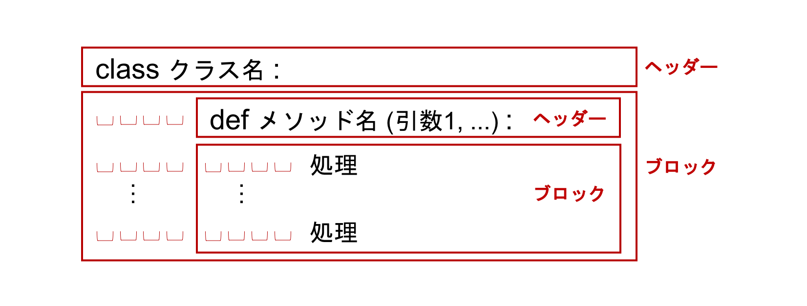

クラス#
オブジェクト指向プログラミング (object-oriented programming) の特徴の一つであるクラス (class) は、オブジェクト (object) を生成するための設計図にあたるものです。 まず、クラスとは何か、オブジェクトとは何かについて説明します。
ここで、唐突に感じられるかもしれませんが、家を何軒も建てるときのことを考えましょう。 それぞれの家の形や大きさ、構造は同じですが、表札に書かれている名前は異なっているとします。 この場合、家の設計図は同じですが、表札に何と書くか、において多少の変更がそれぞれの家ごとに必要となります。 この全ての家に共通した設計図の役割を果たすのがクラスです。 そして、設計図は、家として現実に存在しているわけではありませんが、個別の家は、現実に家としての実体を持って存在しています。 よって、設計図に基づいて個別の家を建てるということを抽象的に言うと、クラスから実体を作成する、となります。 クラスから作成された実体のことをインスタンス (instance) またはオブジェクト (object) とも呼び、クラスから実体を作成するという操作のことをインスタンス化 (instantiation) と呼びます。
クラスの定義#
それでは、家の設計図を表す House というクラスを定義してみましょう。
House クラスには、インスタンス化されたあとに、各インスタンス、すなわち誰か特定の人の家ごとに異なる値を持つ、name_plate という変数を持たせてみます。
name_plate という変数には、個別の家の表札に表示するための文字列が与えられますが、クラスを定義する際には「name_plate という変数を持つことができる」ようにしておくだけでよく、実際にその変数に何か具体的な値を与える必要はありません。
クラスは、設計図であればよく、具体的な値を持たせなくてもよいためです。
具体的な値は、個別の家を作成するとき、すなわちインスタンス化の際に与え、各インスタンスが name_plate という値に自分の家の表札の名前を保持するようにします。
このような、インスタンスに属している変数を属性 (attribute) と呼びます。同様に、インスタンスから呼び出すことができる関数のことをメソッド (method) と呼びます。
クラスは、以下のような構文を使って定義します。

具体的には、以下のようになります。
# クラスの定義
class House:
# __init__() メソッドの定義
def __init__(self, name):
self.name_plate = name
ここで、__init__() という名前のメソッドが House クラスの中に定義されています。
メソッドの名前は自由に名付けることができますが、いくつか特別な意味を持つメソッド名が予め決められています。
__init__() はそういったメソッドの一つで、インスタンス化する際に自動的に呼ばれるメソッドです。
House クラスの __init__() は、name という引数をとり、これを self.name_plate という変数に代入しています。
この self というのは、クラスがインスタンス化されたあと、作成されたインスタンス自身を参照するのに用いられます。
これを使って、self.name_plate = name とすることで、作成された個別のインスタンスに属する変数 self.name_plate へ、引数に渡された name が持つ値を代入することができます。
self が指すものは、各インスタンスから見た「自分自身」なので、各インスタンスごとに異なります。
これによって、self.name_plate は各インスタンスに紐付いた別々の値を持つものとなります。
メソッドは、インスタンスから呼び出されるとき自動的に第一引数にそのインスタンスへの参照を渡します。
そのため、メソッドの第一引数は self とし、渡されてくる自分自身への参照を受け取るようにしています。
ただし、呼び出す際にはそのインスタンスを引数に指定する必要はありません。
以下に具体例を示し、再度このことを確認します。
それでは、上で定義した House クラスのインスタンスを作成してみます。
クラスのインスタンス化には、クラス名のあとに () を追加して、クラスを呼び出すような記法を使います。
この際、関数を呼び出すときと同様にして、() に引数を渡すことができます。
その引数は、__init__() メソッドに渡されます。
my_house = House('Chainer')
House というクラスの __init__() メソッドに、'Chainer' という文字列を渡しています。
my_house が、House クラスから作成されたインスタンスです。
ここで、クラス定義では __init__() メソッドは self と name という 2 つの引数をとっていましたが、呼び出しの際には 'Chainer' という一つの引数しか与えていませんでした。
この 'Chainer' という文字列は、1 つ目の引数であるにも関わらず、__init__() メソッドの定義では 2 つ目の引数であった name に渡されます。
前述のように、メソッドは、インスタンスから呼び出されるとき自動的に第一引数にそのインスタンスへの参照を渡すためです。
この自動的に渡される自身への参照は、呼び出しの際には明示的に指定しません。
また、かならず 1 つ目の引数に自動的に渡されるため、呼び出し時に明示的に与えられた引数は 2 つ目以降の引数に渡されたものとして取り扱われます。
それでは次に、このクラスに hello() というメソッドを追加し、呼び出すと誰の家であるかを表示するという機能を実装してみます。
# クラスの定義
class House:
# __init__() の定義
def __init__(self, name):
self.name_plate = name
# メソッドの定義
def hello(self):
print('{}の家です。'.format(self.name_plate))
それでは、2 つのインスタンスを作成して、それぞれから hello() メソッドを呼び出してみます。
sato = House('佐藤')
suzuki = House('スズキ')
sato.hello() # 実行の際には hello() の引数にある self は無視
suzuki.hello() # 実行の際には hello() の引数にある self は無視
佐藤の家です。
スズキの家です。
sato というインスタンスの name_plate 属性には、'佐藤' という文字列が格納されています。
suzuki というインスタンスの name_plate 属性には、'スズキ' という文字列が格納されています。
それぞれのインスタンスから呼び出された hello() メソッドは、self.name_plate に格納された別々の値を print() を用いて表示しています。
このように、同じ機能を持つが、インスタンスによって保持するデータが異なったり、一部の動作が異なったりするようなケースを扱うのにクラスを利用します。
Python の int 型、float 型、str 型…などは、実際には int クラス、float クラス、str クラスであり、それらの中では個別の変数（インスタンス）がどのような値になるかには関係なく、同じ型であれば共通して持っている機能が定義されています。
5 や 0.3 や 'Chainer' などは、それぞれ int クラスのインスタンス、float クラスのインスタンス、str クラスのインスタンスです。
以上から、クラスを定義するというのは、新しい型を作るということでもあると分かります。
継承#
あるクラスを定義したら、その一部の機能を変更したり、新しい機能を付け足したりしたくなることがあります。
これを実現する機能が継承 (inheritance) です。
例えば、Link というクラスを定義し、そのクラスを継承した Chain という新しいクラスを作ってみましょう。
まず、Link クラスを定義します。
class Link:
def __init__(self):
self.a = 1
self.b = 2
この Link というクラスは、インスタンス化を行う際には 1 つも引数をとりませんが、属性として a と b の 2 つの変数を保持し、それぞれには __init__() メソッドで 1 と 2 という値が代入されます。
このクラスのインスタンスを作成してみます。
l = Link()
l.a
1
l.b
2
l という Link クラスのインスタンスが持つ 2 つの属性を表示しています。
インスタンス化を行った際に __init__() メソッドの中で代入していた値が、表示されています。
次に、このクラスを継承する、Chain というクラスを定義してみます。
継承を行う場合は、クラス定義の際にクラス名に続けて () を書き、その中にベースにしたいクラスの名前を書きます。
() の中に書かれたクラスのことを、定義されるクラスの親クラスといいます。
それに対し、() の中に書かれたクラスからみると、定義されるクラスは子クラスと呼ばれます。
親から子へ機能が受け継がれるためです。
class Chain(Link):
def sum(self):
return self.a + self.b
Chain クラスは __init__() メソッドの定義を持ちません。
__init__() メソッドが定義されていない場合、親クラスの __init__() メソッドが自動的に呼び出されます。
そのため、Chain クラスでは一見何も属性を定義していないように見えますが、インスタンス化を行うと親クラスである Link の __init__() メソッドが自動的に実行され、a、b という属性が定義されます。
以下のコードで確認してみましょう。
# Chain クラスをインスタンス化
c = Chain()
c.a
1
c.b
2
Chain クラスの sum() メソッドでは、この親クラスの __init__() メソッドで定義されている 2 つの属性を足し合わせて返しています。
今作成したインスタンスから、この sum() メソッドを呼び出してみます。
# sum メソッドを実行
c.sum()
3
このように、親クラスを継承し、親クラスに無かった新しい機能が追加された、新しいクラスを定義することができます。
それでは、この Chain というクラスにも __init__() メソッドを定義して、新しい属性 c を定義し、sum() メソッドでは親クラスの a、b という属性とこの新たな c という属性の 3 つの和を返すように変更してみます。
class Chain(Link):
def __init__(self):
self.c = 5 # self.c を新たに追加
def sum(self):
return self.a + self.b + self.c
# インスタンス化
C = Chain()
# error
C.sum()
---------------------------------------------------------------------------
AttributeError Traceback (most recent call last)
Cell In[13], line 2
1 # error
----> 2 C.sum()
Cell In[12], line 7, in Chain.sum(self)
6 def sum(self):
----> 7 return self.a + self.b + self.c
AttributeError: 'Chain' object has no attribute 'a'
エラーが出ました。
エラーメッセージを読みましょう。
AttributeError: ‘Chain’ object has no attribute ‘a’
'Chain' というオブジェクトは、'a' という名前の属性を持っていない、と言われています。
a という属性は、Chain の親クラスである Link の __init__() メソッドで定義されています。
そのため、Chain クラスをインスタンス化する際に、親クラスである Link の __init__() メソッドが呼ばれているのであれば、このエラーは起こらないはずです。
なぜエラーとなってしまったのでしょうか。
それは、Chain クラスにも __init__() メソッドを定義したため、親クラスである Link の __init__() メソッドが上書きされてしまい、実行されなかったためです。
しかし、親クラスの __init__() メソッドを明示的に呼ぶことで、これは解決できます。
それには、super() という組み込み関数を用います。
これを用いると、子クラスから親クラスを参照することができます。
class Chain(Link):
def __init__(self):
# 親クラスの `__init__()` メソッドを呼び出す
super().__init__()
# self.c を新たに追加
self.c = 5
def sum(self):
return self.a + self.b + self.c
# インスタンス化
c = Chain()
c.sum()
今回はエラーが起きませんでした。
Link クラスの __init__() メソッドの冒頭で、まず親クラスの __init__() メソッドを実行し、a、b という属性を定義しているためです。
あるクラスを継承して作られたクラスを、さらに継承して別のクラスを定義することもできます。
class MyNetwork(Chain):
def mul(self):
return self.a * self.b * self.c
MyNetwork クラスは、Link クラスを継承した Chain クラスをさらに継承したクラスで、a、b、c という 3 つの属性を掛け合わせた結果を返す mul() というメソッドを持ちます。
このクラスのインスタンスを作成し、mul() を実行してみましょう。
net = MyNetwork()
net.mul()
\(1 \times 2 \times 5 = 10\) が返ってきました。
以上で、Python の基本についての解説を終了します。 Python には他にもここでは紹介されていない多くの特徴や機能があります。 さらに詳しく学びたい方は、Pythonチュートリアル などを参照してください。